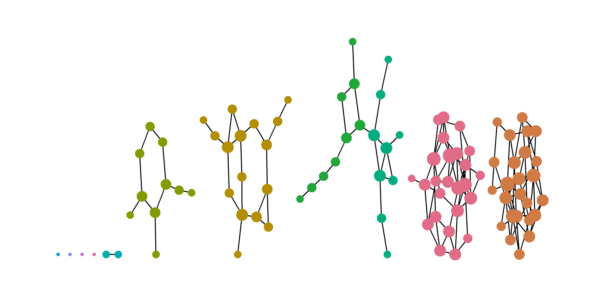
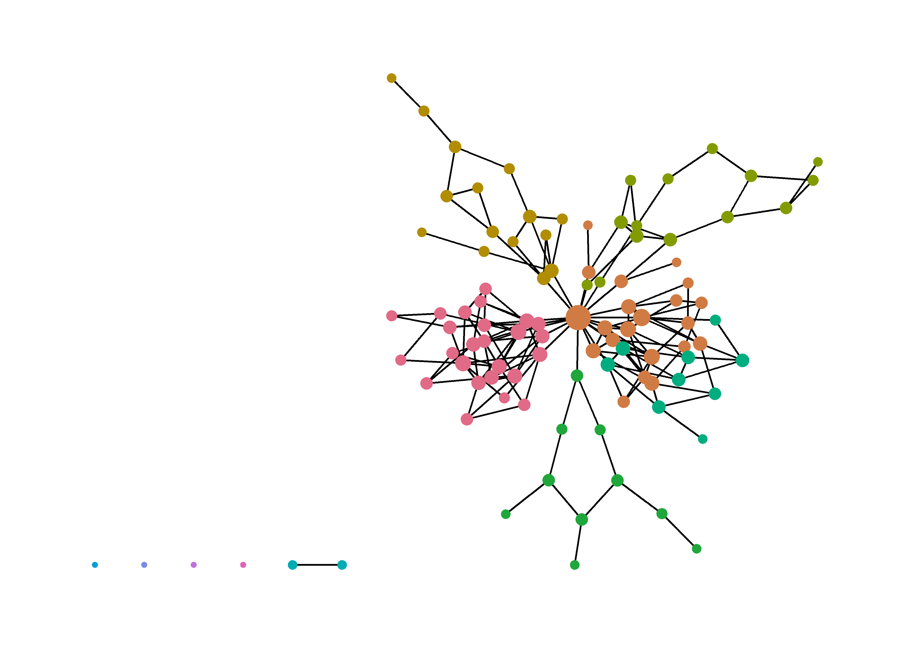
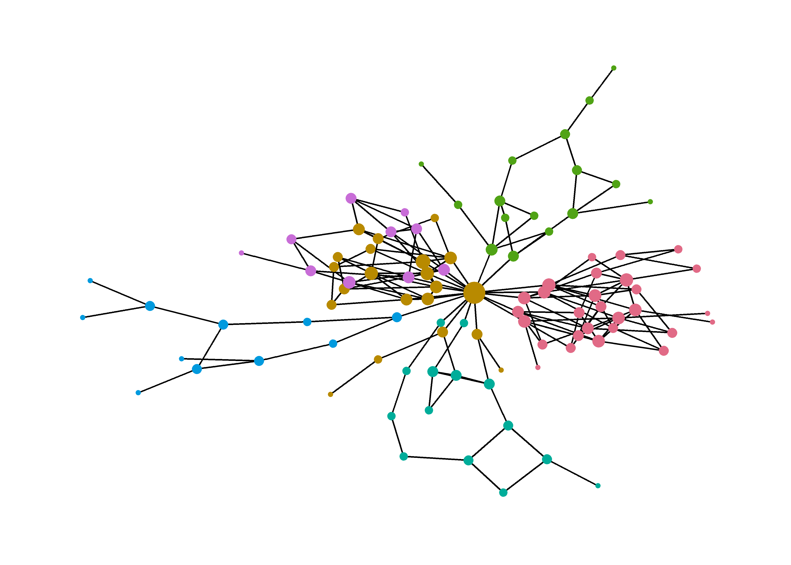
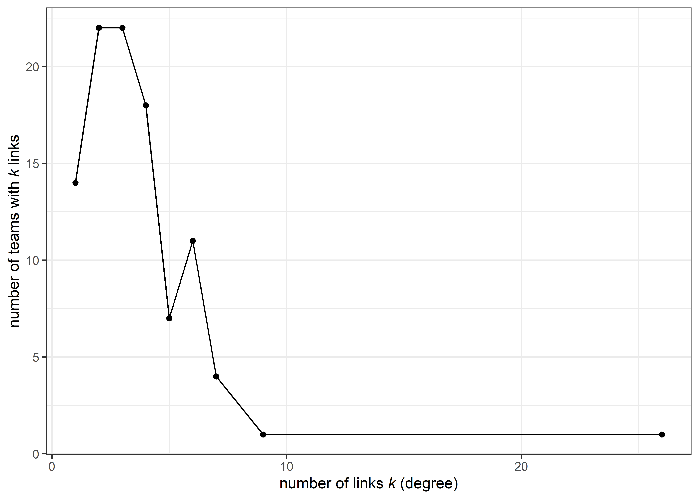
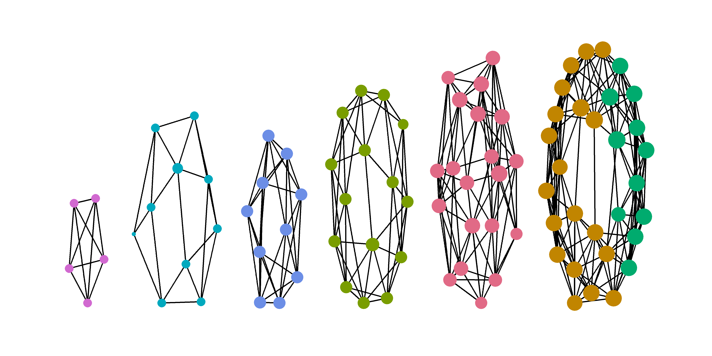
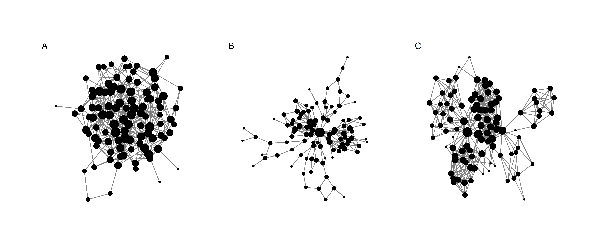

Network generation
Rationale
We aim to assess network effects by embedding the teams in our simulation into different kinds of networks. This is intended to reduce the number of abstractions that the model entails, thus making the model slightly more “realistic”, in that actual researchers are of course embedded into a network of social ties, and these ties have an effect on the researchers themselves.
The literature on co-authorship networks (see e.g., M. E. J. Newman (2004), M. Newman (2001), Kumar (2015)) generally finds them to exhibit dynamics of both small-world networks Watts and Strogatz (1998) and scale-free networks Albert and Barabási (2002). In plain language, co-authorship networks tend to comprise small groups of authors who collaborate frequently, with a few highly connected authors, who tend to be well-known and key figures in a community. Given that our model considers research teams, rather than individual researchers, we did not attempt to calibrate our networks against any given network, but rather to contrast networks with high and low clustering. This can be thought of contrasting research in the natural sciences, such as in physics, with research in the social sciences and humanities. As a baseline, we consider a random network.
Package setup
Baseline - random network
For the random network, we simulate a graph according to the Erdős–Rényi model in the \(G(n,p)\) variant, with \(n = 100\) and \(p = 0.06\). The value for \(p\) was chosen to be as low as possible while still obtaining a fully connected network. Figure 1 shows the resulting network. Key summary statistics are provided in Table 1.
Table 1: Summary statistics for random network
| Number of Nodes | Average degree | Clustering coefficient | Average path distance |
|---|---|---|---|
| 100 | 5.66 | 0.044 | 2.818 |
Case 1: Low clustering
The first case of interest is a network with low clustering. The network is set up to exhibit traits of both small-world and scale-free networks. We simulate the network in four steps:
- We first generate multiple small-world networks that resemble clusters or communities within the field of interest. This step might create isolated nodes, due to the low neighbourhood size and the moderate rewiring probability.
- We add many edges to a few randomly picked nodes to create hubs. The edges are added by following the Barbasi-Albert algorithm, but without adding any further nodes:
- Pick a random node \(o\).
- Pick a second node \(k\) from all nodes (except the node chosen in step 1), with probability \(p(e)\), where \(e = \frac{degree_k}{\sum_{i=1}^{k} degree_k}\)
- Add one edge from \(o\) to \(k\).
- Add further nodes and edges according to the Barbasi-Albert algorithm to ensure the size of of the main component is 100.
- We only retain the main component.
Step 1: create fragmented communities
The fragmented communities are generated using the small-world algorithm proposed by Watts and Strogatz (1998). We obtain low clustering by using small neighbourhood sizes (1-2), and a moderate rewiring probability (0.2-0.3).

| Number of Nodes | Average degree | Clustering coefficient | Average path distance |
|---|---|---|---|
| 100 | 3 | 0.198 | 2.706 |
Step 2: add hubs

| Number of Nodes | Average degree | Clustering coefficient | Average path distance |
|---|---|---|---|
| 100 | 3.5 | 0.157 | 4.206 |
Step 3: Add nodes and edges
# A tibble: 6 × 2
component_id n
<int> <int>
1 1 100
2 2 2
3 3 1
4 4 1
5 5 1
6 6 1Step 4: Retain main component

| Number of Nodes | Average degree | Clustering coefficient | Average path distance |
|---|---|---|---|
| 100 | 3.6 | 0.152 | 4.31 |

Case 2: High clustering
Generating the network with high clustering follows the same rationale as the one for low clustering. Since the settings in this case do not create isolated nodes in step 1, the procedure can be slightly simplified:
- We first generate multiple small-world networks that resemble clusters or communities within the field of interest, with \(n = 85\).
- We add many edges to a few randomly picked nodes to create hubs. The edges are added by following the Barbasi-Albert algorithm, but without adding any further nodes:
- Pick a random node \(o\).
- Pick a second node \(k\) from all nodes (except the node chosen in step 1), with probability \(p(e)\), where \(e = \frac{degree_k}{\sum_{i=1}^{k} degree_k}\)
- Add one edge from \(o\) to \(k\).
- Add further nodes and edges according to the Barbasi-Albert algorithm to ensure a sample size of \(n = 100\).
Step 1: create clustered communities
Highly clustered communities are obtained by using a larger neighbourhood size (3-6) for the clusters of 10-30 nodes, and setting a low rewire probability (0.01-0.05).

| Number of Nodes | Average degree | Clustering coefficient | Average path distance |
|---|---|---|---|
| 90 | 7.444 | 0.591 | 1.752 |
Step 2: add hubs

| Number of Nodes | Average degree | Clustering coefficient | Average path distance |
|---|---|---|---|
| 90 | 8.444 | 0.467 | 3.048 |
Step 3: Add nodes and edges

| Number of Nodes | Average degree | Clustering coefficient | Average path distance |
|---|---|---|---|
| 100 | 8 | 0.442 | 3.105 |

Summary of networks
Figure 2 provides an overview of all three generated networks. Network (A) is clearly random, with no apparent clusters and relatively similar degree across all nodes. In addition, the clustering coefficient is very low (see Table 2). This network serves as a baseline for our simulation.
Network (B) exhibits equally low clustering, but high path length and low degree. This resembles a community where most agents are not well connected, and the distance to other agents is sometimes long. Nevertheless, the network includes a few hubs which are much more connected than the other agents. This might represent a typical sub-field within the social sciences and humanities.
Network (C) is characterised by highly clustered communities, with high average degree, high clustering, and relatively short average paths. Hubs are present and connect the different communities, but are more similar to other nodes in terms of their degree than in the case of network (B). This network might represent a typical sub-field within the natural sciences.

| Topology | Number of Nodes | Average degree | Clustering coefficient | Average path distance |
|---|---|---|---|---|
| Random | 100 | 5.66 | 0.044 | 2.818 |
| Low clustering | 100 | 3.60 | 0.152 | 4.310 |
| High clustering | 100 | 8.00 | 0.442 | 3.105 |
References
Albert, Réka, and Albert-László Barabási. 2002. “Statistical Mechanics of Complex Networks.” Reviews of Modern Physics 74 (1): 47–97. https://doi.org/10.1103/RevModPhys.74.47.
Kumar, Sameer. 2015. “Co-Authorship Networks: A Review of the Literature.” Aslib Journal of Information Management 67 (1): 55–73. https://doi.org/10.1108/AJIM-09-2014-0116.
Newman, M. E. J. 2004. “Coauthorship Networks and Patterns of Scientific Collaboration.” Proceedings of the National Academy of Sciences 101 (suppl_1): 5200–5205. https://doi.org/10.1073/pnas.0307545100.
Newman, Mark. 2001. “The Structure of Scientific Collaboration Networks.” Proceedings of the National Academy of Sciences of the United States of America 98 (2): 404–9. https://doi.org/10.1073/pnas.98.2.404.
Watts, Duncan J., and Steven H. Strogatz. 1998. “Collective Dynamics of ‘Small-World’ Networks.” Nature 393 (6684): 440–42. https://doi.org/10.1038/30918.